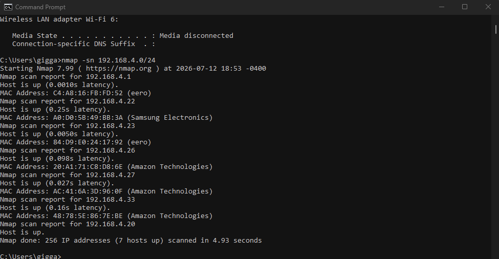
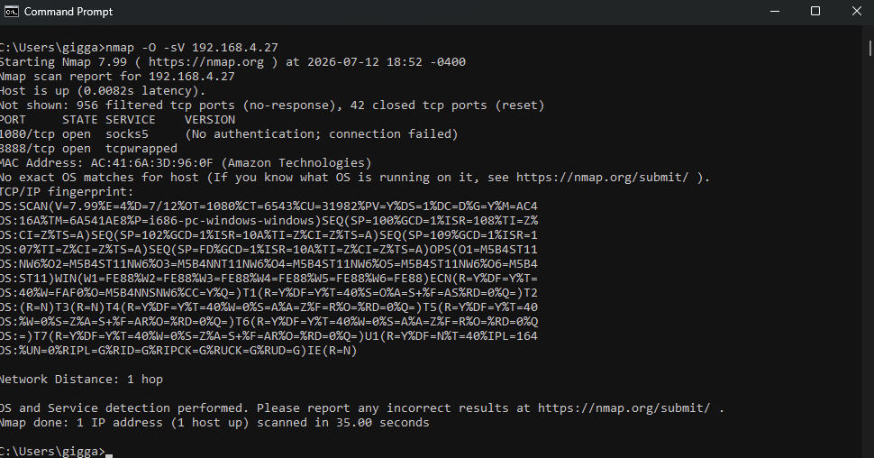

This lab was an audit of my own home network instead of a lab VM: what IoT devices are on it, how they're configured, and what's actually at risk if one of them gets compromised.
List the IoT devices on the network.
My home network has a Samsung smart TV, an Amazon Echo, Amazon Echo Dot v3 and an Amazon Smart Plug.
Review the configuration of discovered devices.
All four devices connect to my home Wi-Fi network through my eero router. The eero system has two mesh points on the network as well.
Does the device have the latest firmware?
The Echo and Echo Dot update their firmware automatically over Wi-Fi, so they should be running the newest version by default. The smart TV also checks for firmware updates automatically when connected to Wi-Fi.
What accounts and services are on the device?
The Echo devices are tied to our Amazon account and can connect to third party skills for music streaming and smart home control. The smart TV isn’t tied to an accounts however, the apps installed for services like Netflix and YouTube are.
Are there any vulnerabilities associated with the device?
Yes. I looked this up and found that Echo devices have had Wi-Fi problems before, that let someone nearby break into the connection and see what was being sent, though Amazon fixed it with an update once it was found. There have also been fake Alexa skills built that keep listening even after they pretend to shut off, so they can record what people say without them knowing.
Source: IoT For All, 2024
Utilize Nmap to scan the local network for IoT devices.
I ran nmap -sn 192.168.4.0/24 to sweep my home network. It found 7 devices total: my eero router and a second eero mesh point, the Samsung smart TV, my Echo, Echo Dot, amazon smart plug, and my own PC.

Identify open ports and services associated with IoT devices.
I ran nmap -O -sV against one of the Amazon devices at 192.168.4.27. It found two open ports: 1080, running a SOCKS5 proxy service with no authentication configured, and 8888, which showed as tcpwrapped, meaning something is listening but nmap could not identify the exact service.
Use the -O operator to identify an OS.
The -O flag ran but nmap could not find an exact OS match for the device. This is pretty common with IoT devices since they often run stripped down or custom embedded operating systems that do not match nmap's fingerprint database.

Use tools such as MAC address lookup to identify device manufacturers.
Nmap resolves manufacturer info automatically from the MAC address during a scan, however to verify the Ips I logged into my router which identified them similarly. The results showed:
- 192.168.4.1 and 192.168.4.23 – eero (home mesh router system)
- 192.168.4.22 – Samsung Electronics (smart TV)
- 192.168.4.26, 192.168.4.27, 192.168.4.33 – Amazon Technologies (Echo Pop, Echo Dot and Amazon Smart Plug)
- 192.168.4.20 – my PC.